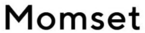

Trade Mark Journal No.2025/024 13 June 2025
WO0000001848782 (21,25,35)
Office of origin: Russian Federation
Date of International Registration:4 February 2025
Date of designation in the UK:
4 February 2025

The mark consists of the verbal element. The verbal element is written in Latin characters as "Momset".
- Class 21
- Cookware and tableware, except forks, knives and spoons; combs and sponges; brushes, except paintbrushes; articles for cleaning purposes; glass, unworked or semi-worked, except building glass; glassware, porcelain and earthenware; indoor aquaria; wine aerators; buckets; cookie jars; candle jars [holders]; china ornaments; vegetable dishes; saucers; goblets; boxes for sweets; bottles; demijohns; china busts; vases; epergnes; fruit bowls; inflatable bath tubs for babies; bird baths; baby baths, portable; plungers for clearing blocked drains; waffle irons, non-electric; ice buckets; mop wringer buckets; buckets made of woven fabrics; whisks, non-electric, for household purposes; towel rails and rings; hair for brushes; horsehair for brush-making; funnels; signboards of porcelain or glass; candle extinguishers; heads for electric toothbrushes; flower pots; chamber pots; cruets; decanters; large-toothed combs for the hair; combs for animals; tea cosies; abrasive sponges for scrubbing the skin; make-up sponges; sponges for household purposes; toilet sponges; sponge holders; toothpick holders; soap holders; table napkin holders; holders for flowers and plants [flower arranging]; tea bag rests; shaving brush stands; toilet paper holders; plug-in diffusers for mosquito repellents; aromatic oil diffusers, other than reed diffusers, electric and non-electric; ironing boards; cutting boards for the kitchen; bread boards; washing boards; crushers for kitchen use, non-electric; strainers for household purposes; smoke absorbers for household purposes; containers for household or kitchen use; kitchen containers; glass jars [carboys]; heat-insulated containers; heat-insulated containers for beverages; thermally insulated containers for food; glass flasks [containers]; closures for pot lids; chamois leather for cleaning; toothpicks; ceramics for household purposes; majolica; works of art of porcelain, ceramic, earthenware, terra-cotta or glass; kitchen grinders, non-electric; cleaning instruments, hand-operated; cabarets [trays]; utensil pots; flower-pot covers, not of paper; shaving brushes; make-up brushes; basting brushes; baking mats; ladles for serving wine; polishing leather; glass bulbs [receptacles]; shoe trees; napkin rings; poultry rings; rings for birds; disposable aluminium foil containers for household purposes; coin banks; piggy banks; bread baskets for household purposes; baskets for household purposes; waste paper baskets; feeding troughs; automatic pet feeders; mangers for animals; lunch boxes; tea caddies; washtubs; earthenware saucepans; cauldrons; coffee percolators, non-electric; coffeepots, non-electric; coffee grinders, hand-operated; beer mugs; tankards; rat traps; pot lids; aquarium hoods; butter-dish covers; dish covers; cheese-dish covers; reusable silicone food covers; buttonhooks; reusable ice cubes; jugs; incense burners; watering cans; fly traps; insect traps; ice cream scoops; mixing spoons [kitchen utensils]; basting spoons [cooking utensils]; pie servers; cosmetic spatulas; spatulas for kitchen use; litter boxes for pets; butter dishes; material for brush-making; polishing materials for making shiny, except preparations, paper and stone; tablemats, not of paper or textile; noodle machines, hand-operated; lint removers, electric or non-electric; pasta makers, hand-operated; polishing apparatus and machines, for household purposes, non-electric; pepper mills, hand-operated; mills for household purposes, hand-operated; feather-dusters; brooms; isothermic bags; decorating bags for confectioners; bowls [basins]; pet feeding bowls; mosaics of glass, not for building; dishcloths; saucepan scourers of metal; soap boxes; mouse traps; nozzles for watering cans; pouring spouts; wine pourers; cake decorating tips and tubes; fitted picnic baskets, including dishes; toilet cases; floss for dental purposes; fibreglass thread, other than for textile use; cookie [biscuit] cutters; pastry cutters; sprinklers; syringes for watering flowers and plants; egg yolk separators; cotton waste for cleaning; wool waste for cleaning; cleaning tow; cold packs for chilling food and beverages; cocktail sticks; food steamers, non-electric; pepper pots; oven mitts; animal grooming gloves; gloves for household purposes; car washing mitts; polishing gloves; gardening gloves; pestles for kitchen use; droppers for household purposes; droppers for cosmetic purposes; plates for diffusing aromatic oil; plates to prevent milk boiling over; dripping pans; trays for household purposes; trays of paper, for household purposes; lazy susans; candle holders; trivets [table utensils]; menu card holders; knife rests for the table; egg cups; abrasive pads for kitchen purposes; drinking troughs; serving ladles; powdered glass for decoration; pottery; pots; painted glassware; tableware, other than knives, forks and spoons; porcelain ware; earthenware; cosmetic utensils; trouser presses; toothpaste tube squeezers; tortilla presses, non-electric [kitchen utensils]; deodorizing apparatus for personal use; cruet sets for oil and vinegar; make-up removing appliances; spice shakers; apparatus for wax-polishing, non-electric; bottle openers, electric and non-electric; glove stretchers; boot jacks; crumb trays; tie presses; potholders; clothes-pegs; glass stoppers; perfume vaporizers; powder puffs; dusting apparatus, non-electric; foam toe separators for use in pedicures; electric combs; grills [cooking utensils]; sifters [household utensils]; drinking horns; shoe horns; candle drip rings; broom handles; salad bowls; place mats, not of paper or textile; beverage urns, non-electric; sugar bowls; beaters, non-electric; egg separators, non-electric, for household purposes; coffee services [tableware]; liqueur sets; tea services [tableware]; sieves [household utensils]; cinder sifters [household utensils]; tea strainers; siphon bottles for carbonated water; rolling pins, domestic; squeegees [cleaning instruments]; steel wool for cleaning; currycombs; blenders, non-electric, for household purposes; scoops for household purposes; salt cellars; drinking vessels; refrigerating bottles; cups of paper or plastic; glasses [receptacles]; drinking glasses; statues of porcelain, ceramic, earthenware, terra-cotta or glass; figurines of porcelain, ceramic, earthenware, terra-cotta or glass; glass for vehicle windows [semi-finished product]; plate glass [raw material]; opal glass; opaline glass; glass incorporating fine electrical conductors; enamelled glass, not for building; glass wool, other than for insulation; vitreous silica fibres, other than for textile use; fibreglass, other than for insulation or textile use; mortars for kitchen use; portable cool boxes, non-electric; soup tureens; drying racks for laundry; rotary washing lines; tajines, non-electric; basins [receptacles]; table plates; disposable table plates; graters for kitchen use; insulating flasks; indoor terrariums [plant cultivation]; indoor terrariums [vivariums]; roller tubes for peeling garlic; cloth for washing floors; polishing cloths; cloths for cleaning; dusting cloths [rags]; furniture dusters; wax-polishing appliances, non-electric, for shoes; electric devices for attracting and killing insects; watering devices; utensils for household purposes; cooking utensils, non-electric; coffee filters, non-electric; flasks; hip flasks; drinking bottles for sports; boot trees; moulds [kitchen utensils]; egg poachers; cake moulds; ice cube moulds; cookery moulds; deep fryers, non-electric; comb cases; bread bins; fly swatters; teapots; kettles, non-electric; cups; garlic presses [kitchen utensils]; ironing board covers, shaped; decorative glass spheres; mop wringers; mops; cocktail shakers; corkscrews, electric and non-electric; animal bristles [brushware]; pig bristles for brush-making; dishwashing brushes; brushes for cleaning tanks and containers; lamp-glass brushes; horse brushes; scrubbing brushes; toothbrushes; toothbrushes, electric; carpet sweepers; shoe brushes; toilet brushes; electric brushes, except parts of machines; brushes; eyebrow brushes; nail brushes; eyelash brushes; nutcrackers; ice tongs; salad tongs; sugar tongs; decanter tags; nest eggs, artificial; window-boxes; boxes of glass; diaper disposal pails; ski wax brushes; dustbins for household purposes; tea infusers; straws for drinking; frying pans, non-electric; chopsticks.
- Class 25
- Clothing, footwear, headgear; wimples; bandanas [neckerchiefs]; underwear; sweat-absorbent underwear; berets; blouses; boas [necklets]; teddies [underclothing]; boxer shorts; ankle boots; ski boots; boots for sports; knickerbockers; trousers; brassieres; adhesive bras; valenki [felted boots]; mittens; collars [clothing]; detachable collars; shirt yokes; veils [clothing]; gabardines [clothing]; galoshes; neckties; ascots; footless socks; boot uppers; corselets; jerseys [clothing]; waistcoats; sports jerseys; hosiery; heels; hoods [clothing]; hat frames [skeletons]; pockets for clothing; caps being headwear; kimonos; cap peaks; visors being headwear; tights; slips [underclothing]; bodices [lingerie]; corsets [underclothing]; suits; bathing suits; masquerade costumes; beach clothes; leotards; jackets [clothing]; stuff jackets [clothing]; fishing vests; leggings [trousers]; liveries; camisoles; sports singlets; cuffs; dickeys [shirt fronts]; mantillas; coats; furs [clothing]; mitres [hats]; muffs [clothing]; footmuffs, not electrically heated; bibs, not of paper; bibs, sleeved, not of paper; fur stoles; hairdressing capes; heel protectors for shoes; ear muffs [clothing]; socks; sweat-absorbent socks; beach shoes; sports shoes; paper clothing; outerclothing; embroidered clothing; ready-made clothing; motorists' clothing; cyclists' clothing; clothing for gymnastics; clothing of imitations of leather; latex clothing; clothing of leather; waterproof clothing; clothing incorporating LEDs; uniforms; clothing containing slimming substances; fittings of metal for footwear; maniples; overcoats; drawers [underwear]; parkas; pelerines; gloves [clothing]; ski gloves; pyjamas; bathing trunks; shirt fronts; pocket squares; dresses; headbands [clothing]; garters; sock suspenders; stocking suspenders; ready-made linings [parts of clothing]; dress shields; braces [suspenders] for clothing; half-boots; ponchos; girdles; belts [clothing]; money belts [clothing]; layettes [clothing]; non-slipping devices for footwear; heelpieces for stockings; welts for footwear; chasubles; shirts; wooden shoes; sandals; bath sandals; boots; jumper dresses; saris; sarongs; footwear uppers; inner soles; albs; bath slippers; togas; knitwear [clothing]; underpants; slippers; shoes; skull caps; turbans; aprons [clothing]; tee-shirts; rash guards; dressing gowns; bath robes; top hats; tips for footwear; stockings; sweat-absorbent stockings; shawls; paper hats [clothing]; shower caps; bathing caps; neck tube scarves; studs for football shoes; hats; babies' pants [underwear]; gaiter straps; pelisses; skirts; petticoats; skorts; football shoes; gaiters; gymnastic shoes; scarves; overalls; headscarves; sleep masks; fingerless gloves; soles for footwear; sweaters.
- Class 35
- Advertising; business management; office functions; arranging subscriptions to telecommunication services for others; import-export agencies; cost price analysis; rental of office equipment in co-working facilities; rental of advertising space; business auditing; financial auditing; business intermediary services relating to the matching of potential private investors with entrepreneurs needing funding; computerized file management; book-keeping; invoicing; demonstration of goods; transcription of communications [office functions]; opinion polling; market studies; business investigations; business research; marketing research; personnel recruitment; business organization consultancy; business management consultancy; personnel management consultancy; professional business consultancy; consultancy regarding advertising communication strategies; layout services for advertising purposes; marketing; marketing in the framework of software publishing; targeted marketing; business management of professional singers; writing of curriculum vitae for others; scriptwriting for advertising purposes; updating and maintenance of information in registries; updating and maintenance of data in computer databases; updating of advertising material; word processing; online retail services for downloadable and pre-recorded music and movies; online retail services for downloadable ring tones; online retail services for downloadable digital music; organization of exhibitions for commercial or advertising purposes; arranging newspaper subscriptions for others; organization of fashion shows for promotional purposes; organization of trade fairs; shop window dressing; business appraisals; payroll preparation; data search in computer files for others; administrative assistance in responding to calls for tenders; business management assistance; commercial or industrial management assistance; providing business information; providing business information via a website; providing commercial and business contact information; providing commercial information and advice for consumers in the choice of products and services; providing user reviews for commercial or advertising purposes; providing user rankings for commercial or advertising purposes; presentation of goods on communication media, for retail purposes; economic forecasting; sales promotion for others; promotion of goods and services through sponsorship of sports events; production of teleshopping programmes; production of advertising films; consumer profiling for commercial or marketing purposes; publication of publicity texts; radio advertising; development of advertising concepts; bill-posting; distribution of samples; dissemination of advertising matter; registration of written communications and data; editing of publicity texts; online advertising on a computer network; outdoor advertising; advertising by mail order; television advertising; compilation of statistics; compilation of information into computer databases; business inquiries; systemization of information into computer databases; administrative services for medical referrals; corporate communications services; negotiation of business contracts for others; compiling indexes of information for commercial or advertising purposes; tax preparation; drawing up of statements of accounts; psychological testing for the selection of personnel; interim business management; outsourced administrative management for companies; business management of hotels; business management for freelance service providers; business project management services for construction projects; commercial administration of the licensing of the goods and services of others; business management of reimbursement programmes for others; administration of frequent flyer programs; administrative processing of purchase orders; administrative services for the relocation of businesses; public relations; commercial lobbying services; competitive intelligence services; modelling for advertising or sales promotion; typing; market intelligence services; appointment reminder services [office functions]; website traffic optimization; tax filing services; search engine optimization for sales promotion; gift registry services; price comparison services; procurement services for others [purchasing goods and services for other businesses]; shorthand; outsourcing services [business assistance]; telephone answering for unavailable subscribers; telephone switchboard services; photocopying services; commercial information agency services; advertising agency services; advisory services for business management; consultancy regarding public relations communication strategies; commercial intermediation services; media relations services; auctioneering; provision of an online marketplace for buyers and sellers of goods and services; secretarial services; pay per click advertising; retail services relating to bakery products; appointment scheduling services [office functions]; administration of consumer loyalty programs; telemarketing services; rental of photocopying machines; rental of sales stands; rental of vending machines; rental of billboards [advertising boards]; publicity material rental; rental of advertising time on communication media; office machines and equipment rental; retail services for pharmaceutical, veterinary and sanitary preparations and medical supplies; retail services for works of art provided by art galleries.
Dotsenko Aleksandra Pavlovna
Representative: Sinitsyna Natalia Igorevna, PO box 88, RU-105120 Moscow, RUSSIAN FEDERATION